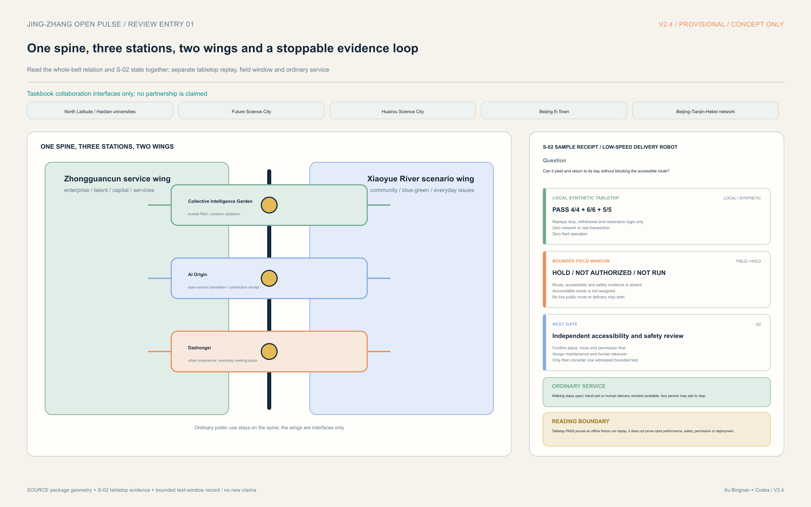
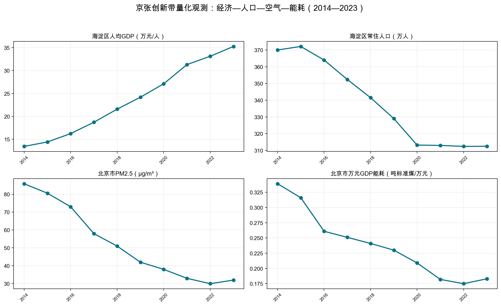
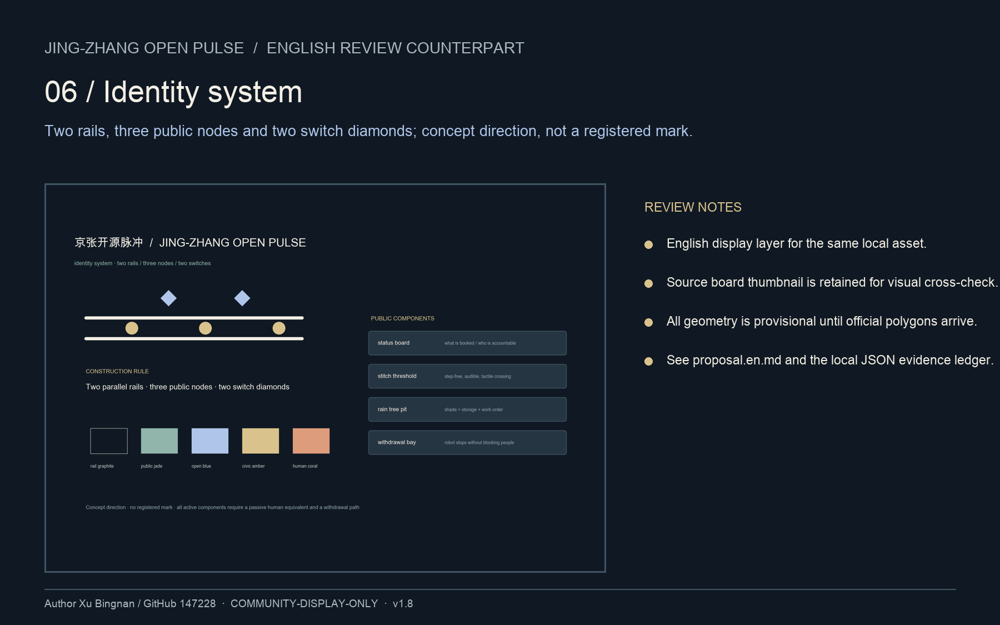
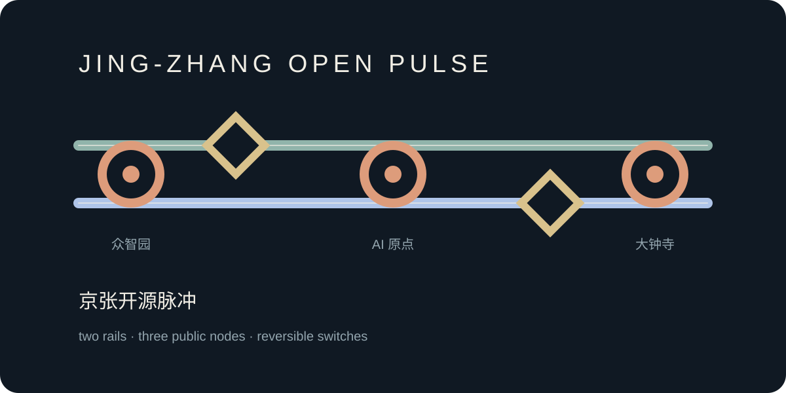
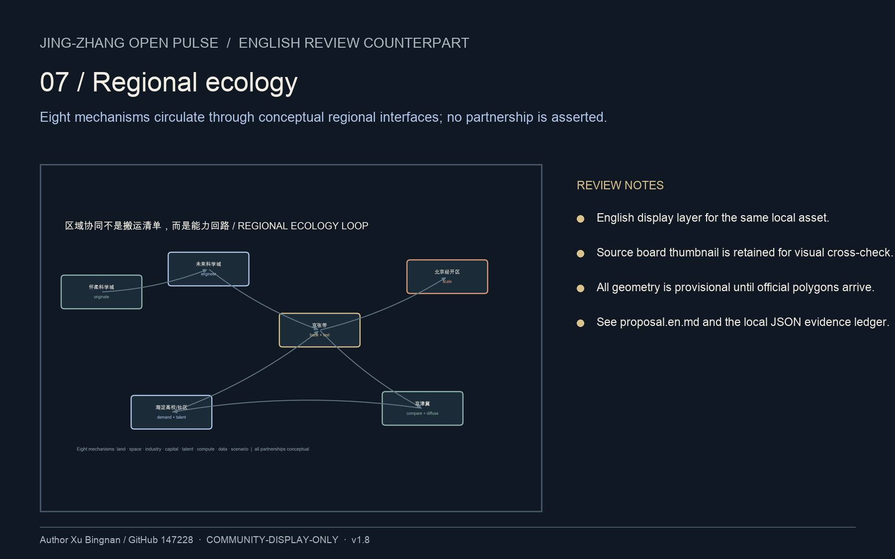
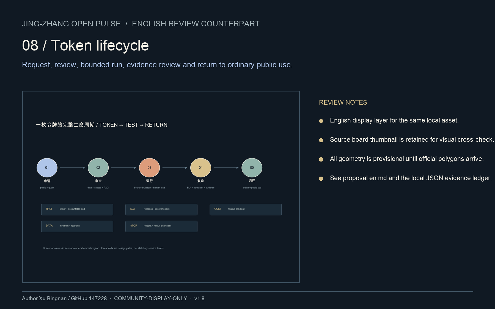
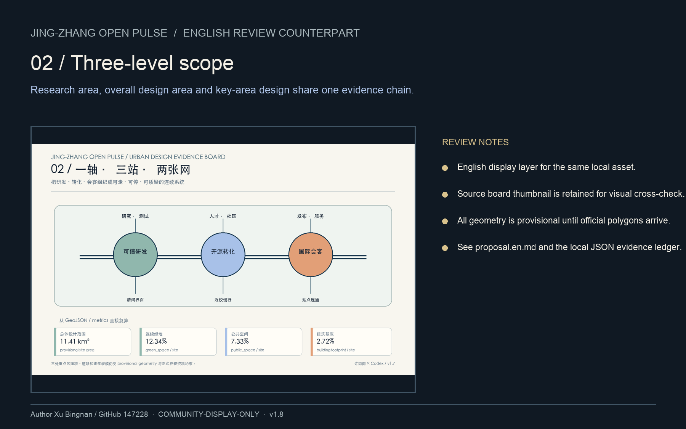
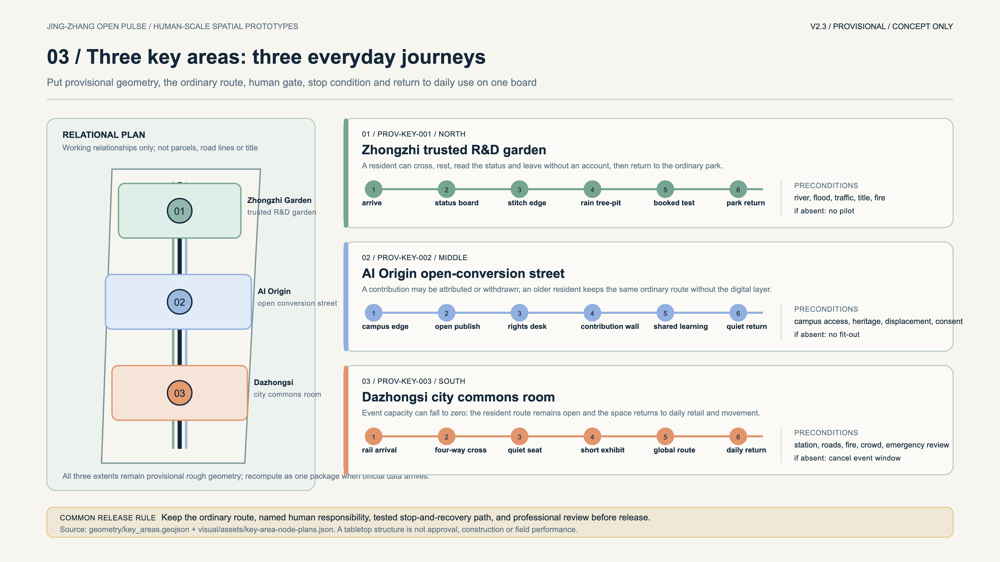
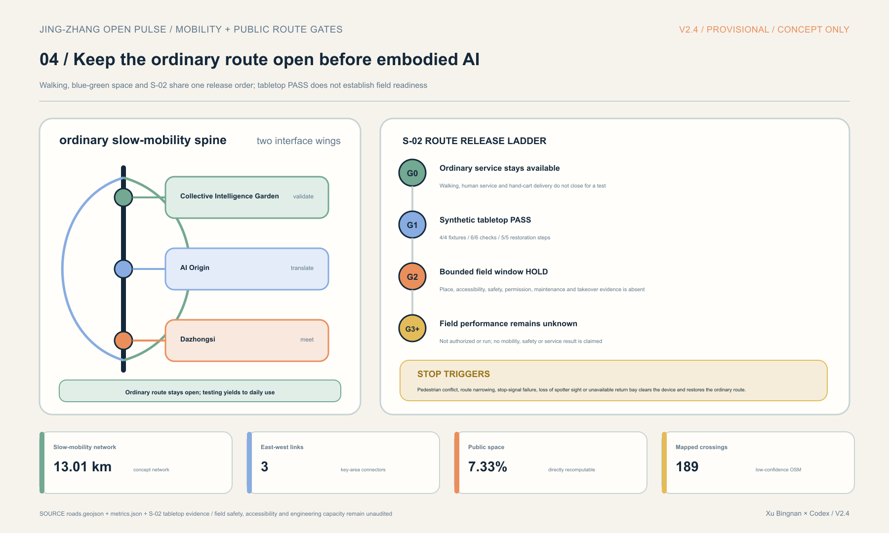
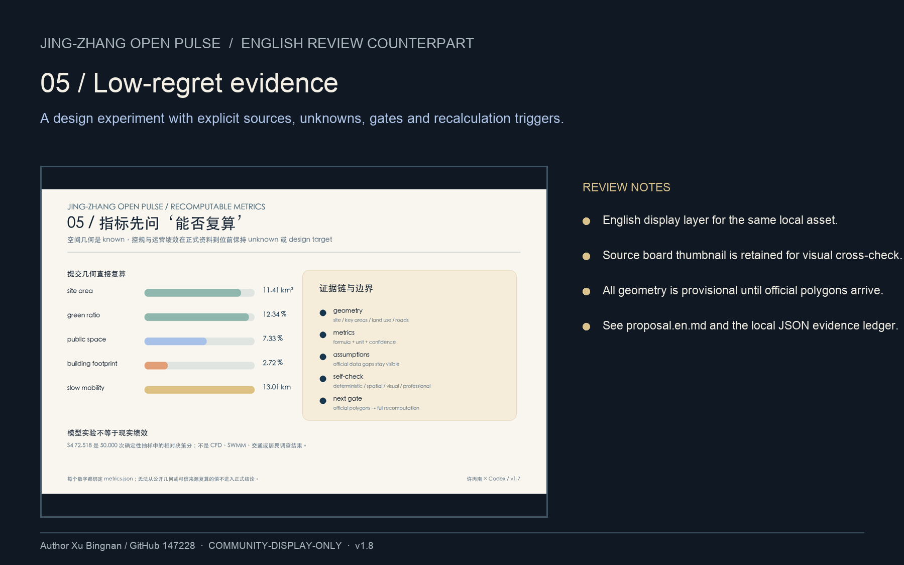

Jing-Zhang
Open Pulse
Everyday accountability defines this public belt. V2.4 puts the spine, three stations, two wings, the local synthetic S-02 tabletop and the field window still on HOLD in the first viewport. Later metrics remain recomputable design evidence, not an official score or field performance.

Geometry is provisional and remains `official_boundary=false`. Quantitative scores are relative design-experiment values, not official statistics, field measurements, legal approvals or competition rankings. Replace official polygons and rerun all areas, ratios, access, drainage, transport, maintenance and metrics before professional implementation.
Decision experiment · low-regret adaptive state

From task to evidence to operation to withdrawal




taskbook crosswalk · regional ecology · 14-row scenario matrix · component library · six sourced cases + patterns · policy and enterprise crosswalk · enterprise growth-stage playbook · industry validation windows · policy and enterprise markers · node-level concepts · public-interest audit · identity rules · wind-health validation protocol · field measurement protocol · receipt schema · synthetic S02 receipt · QA record · clearance ledger




English formal proposal · Chinese formal proposal · English offline report · copyright statement
All pages are offline and require no remote runtime assets. Human service, accessibility, privacy, drainage, safety, rights and rollback gates remain design requirements.